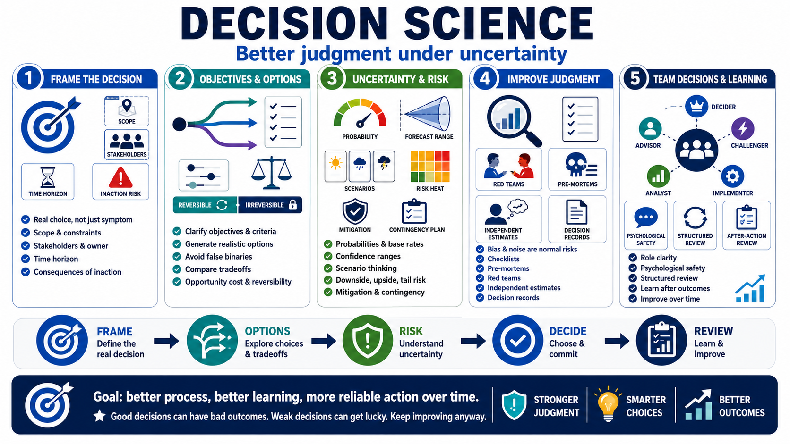

Course Summary and Key Takeaways
Connecting to LMS... Progress: in progress

Narration
Decision science helps people make clearer, more explicit, and more reviewable choices under uncertainty. It is not a promise of perfect prediction. It is a discipline for improving the quality of the decision before the outcome is known, then learning from what happens afterward.
Strong decision practice starts with the frame. Define the real choice, not just the symptom. Clarify the scope, constraints, stakeholders, time horizon, decision owner, and consequences of inaction. Then clarify objectives, values, and criteria so the group knows what it is trying to optimize and what tradeoffs it is willing to accept.
Good decision makers generate realistic options and avoid false binaries. They compare tradeoffs, opportunity costs, reversibility, and staged commitments. They make uncertainty explicit with probabilities, base rates, forecasts, confidence ranges, scenario thinking, and updates as evidence changes. They consider risk as likelihood, impact, context, downside, upside, tail exposure, mitigation, and contingency.
They also respect the limits of judgment. Bias and noise are normal risks, not personal insults. Checklists, pre-mortems, red teams, independent estimates, decision records, and structured review help teams improve without pretending people are perfectly rational. In teams, role clarity and psychological safety make it more likely that the right information reaches the decision maker in time.
The goal is better judgment, better process, better learning, and more reliable action over time. You will still make decisions with incomplete information. Some good decisions will still have bad outcomes, and some weak decisions will get lucky. Decision science gives you a way to keep improving anyway.